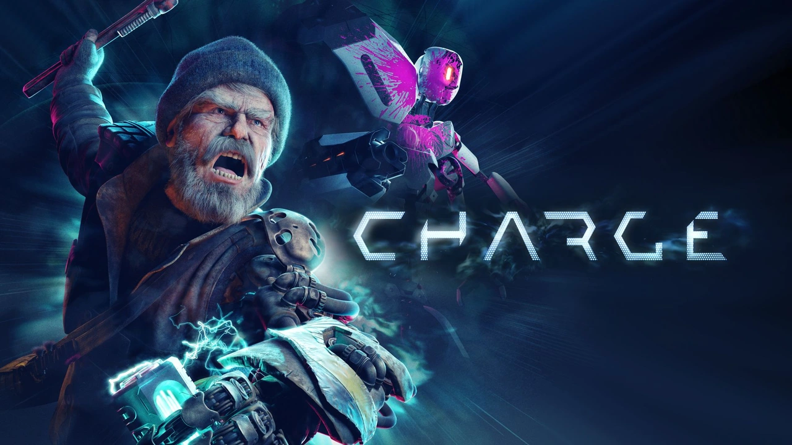
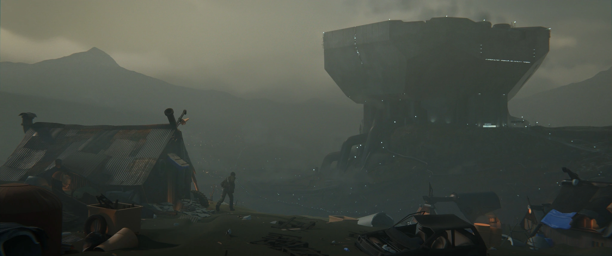

ENERGY PULSE
能量脉冲 · 30 秒科技概念片视觉参考


镜头编排
微距缓推，沿金属接缝划过第一道光。声音从轻微电流开始。

镜头绕行机械结构，粒子与光线沿路径加速，节奏逐步抬升。
拉远至环境全景，光脉冲穿过空间，留出品牌落版的位置。
制作重点：先用灰模确定路径和镜头速度，再测试发光材质与雾层。粒子密度随节奏增加，让最后的全景有足够的亮度层次。
方案 · 从一个想法，到一组能拍出来的镜头。
创意提案示例 / 参考图来自 Blender Studio

微距缓推，沿金属接缝划过第一道光。声音从轻微电流开始。
镜头绕行机械结构，粒子与光线沿路径加速，节奏逐步抬升。
拉远至环境全景，光脉冲穿过空间，留出品牌落版的位置。
制作重点：先用灰模确定路径和镜头速度，再测试发光材质与雾层。粒子密度随节奏增加，让最后的全景有足够的亮度层次。